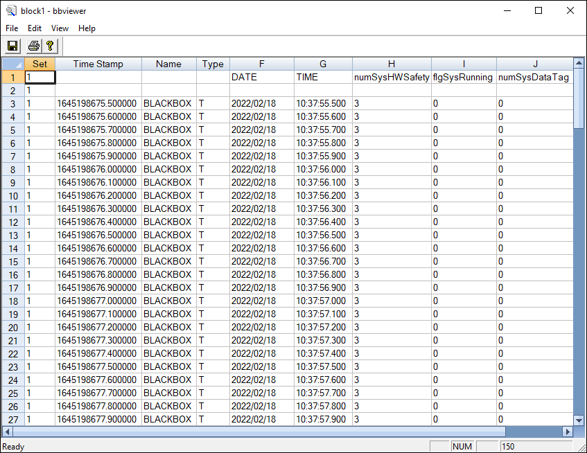

iTest User's Guide
The Blackbox is a data recorder with a circular buffer used to record data at a user-defined rate and length of time. The Blackbox Viewer window (bbviewer) displays Blackbox data in a spreadsheet format. For more information about Blackbox logging, refer to the Blackbox Logging documentation.
 |
NOTE: | You cannot run bbviewer while iTest is running unless the system channel, CRS_CONTROL, is set to 0. |
BBViewer

The following switch is used to generate the Blackbox.dat file and save it to a specific filename or filepath:
Syntax
/g [destination filename]
Examples:
+0.01 MESSAGE "\\.\mailslot\Softpanel>>$EXECUTE;bbviewer.exe /g" +0.01 PAUSE 5 +0.01 MESSAGE "\\.\mailslot\Softpanel>>$EXECUTE;bbviewer.exe /g example.dat" +0.01 PAUSE 5 +0.01 MESSAGE "\\.\mailslot\Softpanel>>$EXECUTE;bbviewer.exe /g c:\example.dat"
The following switch is used to run bbviewer.exe invisibly:
Syntax:
/silent
The following menu options are available:
Menu Options
| Option | Description |
| File Menu | |
|---|---|
| Generate blackbox.dat | Converts Blackbox binary data into ASCII text to be displayed in a spreadsheet or text editor. |
| Save As | Prompts you to save the Blackbox data. |
| Displays a standard Windows print dialog that can be used to print the contents of the window. | |
| Print Preview | Lets you view printed output before it is sent to the printer. |
| Print Setup | Launches the Print Setup dialog, allowing you to specify the settings for printing the Blackbox data. |
| Exit | Closes the Blackbox window. |
| Edit Menu | |
| Find | Displays the Find dialog, allowing you can search the Blackbox window for specified text. |
| Font | Displays the Font dialog, allowing you to specify the attributes for text in the Blackbox window. |
| View Menu | |
| Refresh | Updates the spreadsheet with the most current data. |
| All | Overrides all settings specified in the Filter dialog box. |
| Filter | Opens the Filter dialog box in which you can select the information that you want to display in the bbviewer window. |
| Freeze Rows | Locks the rows from the first row in the spreadsheet to the selected row. Frozen rows do not scroll when you scroll through the document. |
| Unfreeze Rows | Unlocks rows frozen by the Freeze Rows option. |
| Transpose | Reverses the row and column layout of the file in the bbviewer window. |
| Toolbar | When selected, displays the bbviewer toolbar. |
| Status Bar | When selected, displays a status bar in the lower portion of the bbviewer window. |
| Help Menu | |
| About bbviewer | Launches the About dialog. |